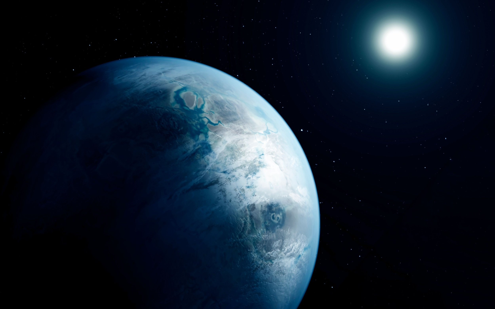
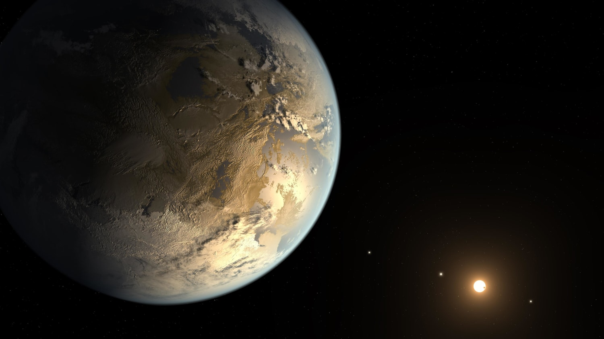
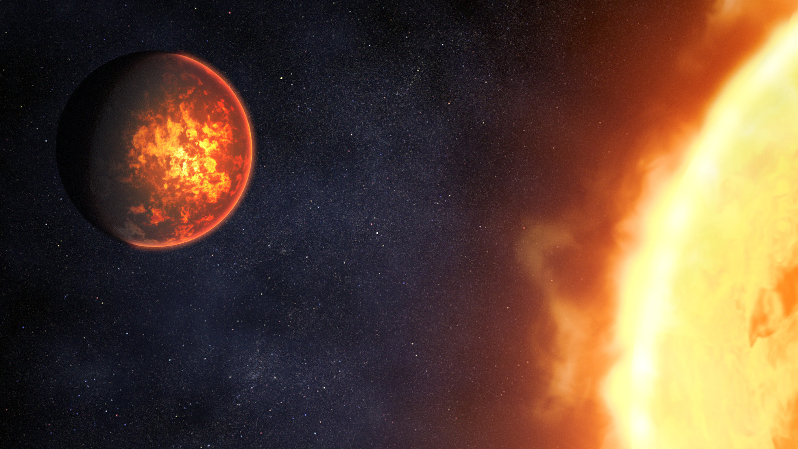
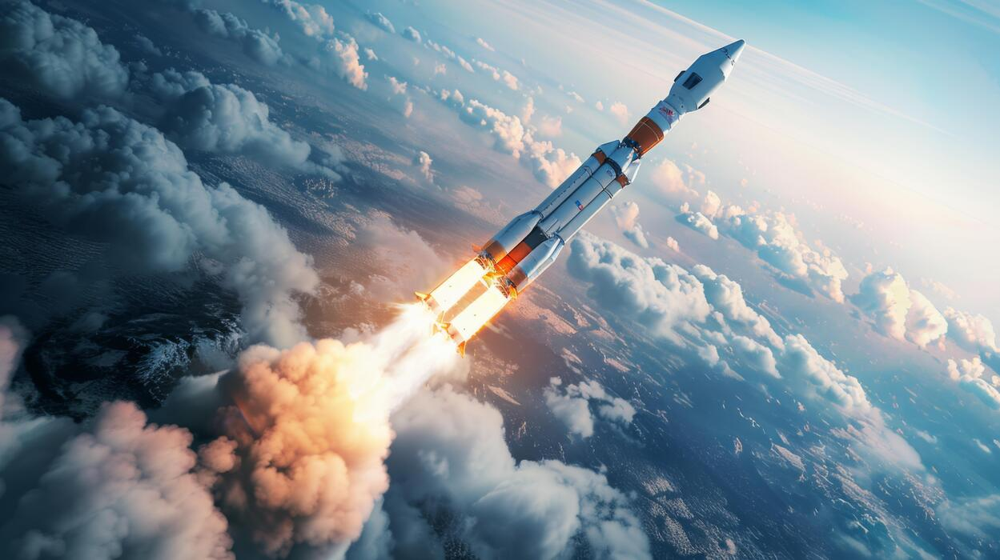

The solar system consists of the Sun, eight planets, their moons, and various other celestial objects such as asteroids and comets. The planets are Mercury, Venus, Earth, Mars, Jupiter, Saturn, Uranus, and Neptune. Each planet has unique characteristics and features that make them fascinating to study. The solar system is a vast and dynamic place that continues to captivate scientists and space enthusiasts alike.

Exoplanets are planets that orbit stars outside our solar system. They are diverse in size, mass, and orbital characteristics, and some may have conditions suitable for life. Some can be like Earth, and others not so much. Some could have burning surfaces or freezing conditions. These other worlds continue to surprise us with their variety and complexity.



Stars are massive, luminous spheres of plasma held together by their own gravity. They are the fundamental building blocks of the universe, and their life cycles play a crucial role in the formation and evolution of galaxies. Stars vary greatly in size, mass, temperature, and brightness. And they all eventually die out and can make other celestial objects. For example, red giants and white dwarfs there are also nebulas and black holes.

Rockets are vehicles designed to travel through space by expelling mass in one direction, which creates thrust in the opposite direction. They are essential for space exploration and satellite deployment. Rockets can be categorized based on their propulsion systems, stages, and intended use. From small sounding rockets to massive launch vehicles, they represent the pinnacle of engineering achievement in the field of aerospace.
